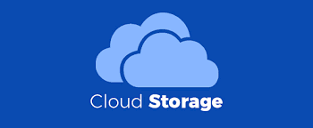

Layanan Komputasi
Layanan komputasi merupakan komponen terpenting dalam menjalankan sebuah aplikasi. Setiap aplikasi memerlukan mesin yang memproses dan menjalankan programnya. Google Cloud menyediakan beberapa opsi layanan komputasi yang bisa digunakan sesuai dengan kebutuhan.
Compute Engine
Layanan Compute Engine menyediakan virtual machine (VM) yang aman dan customizable (dapat dikustomisasi). VM instance yang Anda buat akan berjalan di data center Google yang terhubung dengan jaringan fiber di seluruh dunia. Compute Engine menawarkan beberapa fitur seperti berikut.
- Virtual machine dengan kinerja pemrosesan dan penyimpanan yang tinggi.
- Auto scaling (penyesuaian kapasitas otomatis) dan load balancer (pembagian beban) untuk VM yang bersifat homogen/identik.
- Akses langsung ke GPU yang bisa digunakan untuk mempercepat kinerja.
- Dukungan berbagai versi dari sistem operasi seperti Linux dan Windows.
- Preemptible VM (instance yang dapat terhenti kapan saja tergantung pada system event) yang dapat dibuat dan dijalankan dengan harga yang lebih rendah daripada VM normal.
Compute Engine cocok digunakan bagi Anda yang memerlukan kontrol penuh atas infrastruktur dan akses langsung ke hardware seperti GPU dan SSD. Anda juga dapat memindahkan data pada data center atau colocation menuju cloud dengan menggunakan layanan ini.
Google Kubernetes Engine
Google Kubernetes Engine adalah layanan dari Google Cloud untuk mengelola Kubernetes. Kubernetes sendiri adalah sebuah container orchestrator yang berfungsi untuk menjalankan container di dalam VM cluster, memantau kondisi container, dan mengelola siklus hidup dari VM instance.
Cloud Run
Cloud Run adalah layanan komputasi terkelola dari Google yang memungkinkan Anda untuk menjalankan container dengan mudah di infrastrukturnya Google yang terkenal sangat scalable. Berbeda dengan layanan Google Kubernetes Engine (yang kita bahas di materi sebelumnya) di mana kita harus meluncurkan cluster, membuat deployment, mengelola pod, dan komponen Kubernetes lainnnya untuk menjalankan aplikasi dalam container (containerized application), Cloud Run menghilangkan semua kerumitan tersebut sehingga memudahkan Anda sebagai Developer untuk men-deploy aplikasi di Google Cloud.
Layanan Data
Ketahuilah bahwa setiap aplikasi pastinya memiliki jenis penyimpanan (storage) dan basis data (database) yang berbeda-beda. Untungnya, Google Cloud menyediakan berbagai layanan data yang lengkap dan beragam demi menyesuaikan kebutuhan pengembangan aplikasi.
Beragam jenis data yang didukung mulai dari data terstruktur, semi terstruktur, hingga tidak terstruktur; kemudian transaksional ataupun relasional; dapat disimpan di Google Cloud dengan aman dan mudah.
Berikut layanan-layanan data yang ditawarkan oleh Google Cloud, antara lain:
- Cloud Storage: Layanan penyimpanan berbasis object (berkas utuh) yang aman dan tangguh.
- Persistent Disk: Layanan penyimpanan berbasis block (data disimpan menjadi blok-blok dengan ukuran yang sama) berperforma tinggi yang cocok digunakan sebagai penyimpanan untuk VM instance yang berjalan di Google Cloud.
- Cloud SQL: Layanan database relasional yang dikelola sepenuhnya oleh Google Cloud yang memberikan kemudahan dalam mengatur, memelihara, dan mengelola database engine seperti MySQL, PostgreSQL, dan SQL Server.
- Cloud Spanner: Layanan database relasional berskala global yang sepenuhnya dibangun untuk menawarkan skala tak terbatas dan ketersediaan 99.999%.
Data tak hanya terbatas pada pembicaraan storage dan database saja. Kita semua tahu bahwa data berperan penting dalam bisnis. Dengan analisis yang tepat, perusahaan akan mendapatkan wawasan bisnis yang komprehensif dalam mendukung pergerakan bisnisnya.
Cloud Storage

Cloud Storage adalah layanan penyimpanan dari Google Cloud yang ditujukan untuk menyimpan berkas berbasis object.
Object adalah sebuah data individual tak terstruktur (maksudnya, berkas apa pun seperti audio, video, dokumen, gambar, dsb) yang dapat disimpan pada penyimpanan cloud.
Ketika membuat bucket di Cloud Storage, kita perlu menentukan storage class alias kelas penyimpanan yang akan digunakan:
- Standard: Jenis penyimpanan untuk data yang sering diakses dan/atau disimpan hanya untuk periode waktu yang singkat.
- Nearline: Jenis penyimpanan yang tangguh dengan harga rendah untuk data yang jarang diakses.
- Coldline: Jenis penyimpanan yang tangguh dengan harga yang sangat rendah untuk data yang jarang diakses.
- Archive: Jenis penyimpanan yang tangguh dengan harga yang paling rendah untuk pengarsipan data.
Dengan mampu membedakan kasus penggunaan untuk setiap storage class, memudahkan Anda dalam memilih jenis penyimpanan yang tepat untuk kebutuhan aplikasi.
Persistent Disk
Persistent Disk adalah layanan penyimpanan berbasis block dengan performa tinggi untuk VM instance di Google Cloud. Persistent Disk menyediakan penyimpanan SSD (solid state drive) dan HDD (hard disk drive) yang dapat dipasangkan ke VM instance pada Compute Engine atau Google Kubernetes Engine. Bila ingin menambahkan persistent disk (PD) ke suatu VM instance, Anda bisa memilih salah satu disk type berikut:
- Zonal Standard PD: Penyimpanan berbasis block yang efisien dan dapat diandalkan.
- Regional Standard PD: Penyimpanan berbasis block yang efisien dan dapat diandalkan dengan replikasi secara sinkronis di 2 zone dalam sebuah region.
- Zonal Balanced PD: Penyimpanan berbasis block yang murah dan dapat diandalkan.
- Regional Balanced PD: Penyimpanan berbasis block yang murah dan dapat diandalkan dengan replikasi secara sinkronis di 2 zone dalam sebuah region.
- Zonal SSD PD: Penyimpanan berbasis block yang cepat dan dapat diandalkan.
- Regional SSD PD: Penyimpanan berbasis block yang cepat dan dapat diandalkan dengan replikasi secara sinkronis pada 2 zone dalam sebuah region.
- Zonal Extreme PD: Opsi penyimpanan berbasis block yang memiliki performa paling cepat.
Perlu Anda ketahui, selain persistent disk, terdapat juga Local SSD yang juga merupakan penyimpanan berbasis block untuk VM instance. Berbeda dengan persistent disk berlokasi terpisah dari VM instance, Local SSD terpasang secara fisik ke perangkat server yang menjalankan VM instance Anda.
Cloud SQL
Cloud SQL adalah layanan database relasional dari Google Cloud yang menyediakan berbagai fitur untuk memudahkan kita dalam membuat, mengatur, dan mengelola database engine seperti MySQL, PostgreSQL, dan SQL Server.
Perlu Anda ingat bahwa Cloud SQL merupakan layanan untuk memudahkan Anda dalam membuat database relasional (SQL), bukan untuk melakukan tugas-tugas administrasi pada database itu sendiri. Ada banyak database administration tools yang dapat Anda pilih, berikut beberapa di antaranya:
- phpMyAdmin untuk MySQL.
- MySQL Workbench untuk MySQL.
- Toad Edge untuk MySQL dan PostgreSQL.
- pgAdmin.org untuk PostgreSQL.
- SQL Server Management Studio untuk SQL Server.
- Visual Studio Code untuk SQL Server.
Bila Anda mengaktifkan public IP address pada Cloud SQL instance, Anda bisa mengakses database dari luar Google Cloud via internet menggunakan tools yang disebutkan di atas. Namun, bila Cloud SQL instance Anda hanya memiliki private IP address, Anda hanya bisa mengaksesnya melalui VPC network (misal, melalui Cloud Shell atau VM instance di dalam VPC network yang sama).
Cloud Bigtable
Cloud Bigtable termasuk ke dalam jenis database nonrelasional alias NoSQL. Namun, tak seperti Firestore yang berorientasi document, Cloud Bigtable merupakan wide-column database. Sesuai dengan namanya, wide-column database menyimpan data dalam jumlah kolom yang besar (hingga ribuan kolom dan miliaran baris).
Konsep wide-column sebenarnya mirip seperti tabel pada database relasional. Akan tetapi, setiap kolom tidak wajib diisi sehingga tak ada skema tetap yang menentukan struktur data.
Jenis data yang biasa disimpan pada Cloud Bigtable antara lain:
- Time-series data, contohnya seperti informasi penggunaan CPU dan memory dari waktu ke waktu untuk beberapa server.
- Marketing data, misalnya riwayat pembelian dan preferensi pelanggan pada aplikasi e-commerce.
- Financial data, yakni seperti riwayat transaksi, harga saham, dan nilai tukar mata uang.
- Internet of Things data, contohnya adalah laporan penggunaan energi dan informasi perangkat yang terhubung dengan Internet of Things.
- Graph data, misalnya data seperti informasi bagaimana pengguna bisa saling terhubung satu sama lain.
Bigtable dirancang sebagai database berukuran besar, bahkan hingga terabyte dan petabyte sekalipun. Cloud Bigtable ideal untuk aplikasi yang membutuhkan throughput dan scalability yang tinggi dengan data berbentuk key/value (kunci dan nilai), yang mana tiap nilainya tak lebih dari 10 MB.
Layanan Jaringan
Google Cloud Platform (GCP) menyediakan beragam layanan jaringan yang memungkinkan pengguna untuk mengelola konektivitas dan jaringan mereka dengan efisien dan aman.
Melalui layanan seperti Virtual Private Cloud (VPC), Load Balancing, dan Cloud Interconnect, pengguna dapat menciptakan lingkungan jaringan yang sesuai dengan kebutuhan mereka. Selain itu, GCP juga menawarkan alat keamanan jaringan, seperti Cloud Armor dan Cloud VPN, untuk melindungi aplikasi dan data mereka.
Dengan kemampuan global routing dan layanan CDN, Google Cloud memastikan kinerja aplikasi yang optimal dengan mengurangi latensi dan meningkatkan kecepatan akses. Selain itu, pemantauan dan alat diagnostik yang disediakan oleh GCP membantu pengguna dalam memantau kinerja jaringan mereka dan mengidentifikasi masalah dengan cepat.
Semua ini membuat Google Cloud menjadi pilihan yang kuat bagi organisasi yang mengandalkan jaringan yang andal dan aman untuk aplikasi mereka.